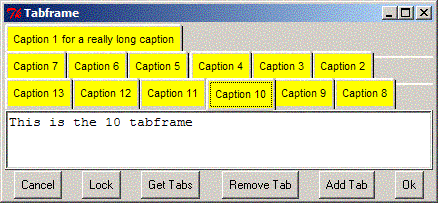

Tk::DynaTabFrame - An alternative to the NoteBook widget : a tabbed geometry manager with dynamically stacking tabs
use Tk::DynaTabFrame;
$TabbedFrame = $widget->DynaTabFrame
(
-font => '-adobe-times-medium-r-normal--20-*-*-*-*-*-*-*',
-tabcurve => 2,
-padx => 5,
-pady => 5,
-raisecmd => \&raise_callback
-tablock => undef
[normal frame options...],
);
font - font for tabs
tabcurve - curve to use for top corners of tabs
padx - padding on either side of children
pady - padding above and below children
raisecmd - code ref invoked on a raise event; passes
the caption of the raised tab
tablock - locks the resize of the tabs; when set to a true
value, the tabs will not be rearranged when the enclosing
window is resized; default off (ie, tabs are rearranged
on resize)
$CurrentSelection = $Window->cget ('-current');
$CurrentSelection = $Window->cget ('-raised');
$CurrentCaption = $Window->cget ('-raised_name');
current - (Readonly) currently selected widget
raised - (Readonly) currently selected widget
raised_name - (Readonly) caption of currently selected widget
$Tabs = $Window->cget ('-tabs');
$Tabs - a hashref of the tab Button widgets,
keyed by the associated caption. Useful for
e.g., attaching balloons to the tabs
$frame = $TabbedFrame->add
(
-caption => 'Tab label',
-tabcolor => 'yellow',
);
caption - label text for the widget's tab
tabcolor - background for the tab button
Returns a new Frame widget to be populated by the application.
$TabbedFrame->delete($caption);
Deletes the tab/frame specified by $caption (if it exists).
$TabbedFrame->raise($caption):
Raises the tab/frame specified by $caption (if it exists).
Values shown above are defaults.
[ NOTE: This module is derived directly from Tk::TabFrame... tho you probably can't tell it anymore ]
A Notebook with dynamically rearranging tabs. When you resize a window, the tabs will either stack or unstack as needed to fit the enclosing widget's width. Likewise, when tabs are added or removed, the tabs will stack/unstack as needed.
Tabs are added at the bottom row, left side, and automatically become the ``raised'' tab upon being added. The tabs can be raised by both mouse clicking, or by using left and right keyboard arrows to traverse the tabbing order. If a tab in a row other than the bottom row is raised, all rows are rotated down, with bottom rows wrapping back to the top, until the raised row is moved to the bottom row.
NOTE: As of V. 0.02, unfilled top rows no longer cause all tabs to rearrange when the top row is raised. However, removing or adding a tab, or resizing the enclosing widget with -tablock turned off, *does* cause tab rearrangement.
As of v 0.02, this widget may be appropriate for configuration dialogs, as the tab movement is no longer chaotic, assuming no tab removals/additions occur, and -tablock is turned on, after the initial dialog setup is complete.
As of Ver. 0.04, if the currently raised tab is removed, the leftmost tab of the bottom row becomes the raised tab. Prior behavior (attempting to raise the nearest neighbor tab) created more problems than it solved.
Use with *optional* horizontal scrolled frames (ie, 'os') seems to cause some race conditions (Config events keep resizing the frame up, then down)
Dean Arnold, darnold@presicient.com
| March 30, 2004 : Ver. 0.07 |
| - fixed ConfigDebounce width threshold for Tk804.026 |
| January 16, 2004 : Ver. 0.06 |
| - fixed programmatic raise |
| - added (simple) install test |
| - added programmatic raise button to demo app |
| January 13, 2004 : Ver. 0.05 |
| - added "pseudo-tabs" to backfill the space |
| between the right side of last tab in a row, |
| and the right side of the enclosing frame |
| January 6, 2004 : Ver. 0.04 |
| - fixed TabRemove for remove from arbitrary position |
| - updated demo app to exersize arbitrary position |
| removal |
| - fixed apparent timing issue with TabRemove and |
| resizing that caused occasional phantom client entries |
| January 5, 2004 : Ver. 0.03 |
- added raised_name() method/-raised_name property
|
| to return caption of currently raised page |
| - fixed tab ordering on resize when raised tab |
| gets moved to other than bottom row |
| December 29, 2003 : Ver. 0.02 |
| - improve raise behavior |
| - improve tab font behavior |
| (use platform/application default when none specified) |
| - added tablock option |
December 25, 2003 : Converted from Tk::TabFrame